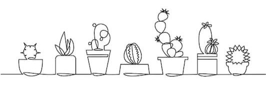

Oi, meu nome é Luis Felipe Santos Ramos.
Tenho 19 anos e estou cursando Sistemas de Informação na faculdade Alfa Unipac localizada em Teofilo Otoni. Meu objetivo aqui é ter uma visão mais ampla sobre o vasto mundo da tecnologia, para me tornar um profissional qualificado.